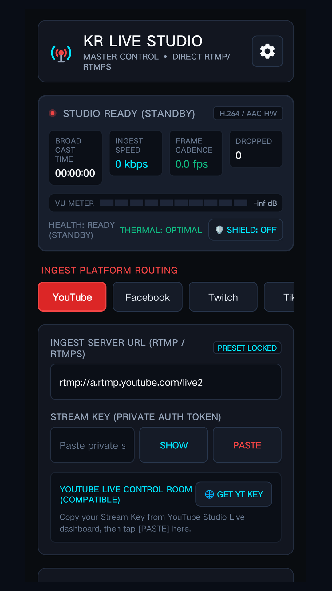
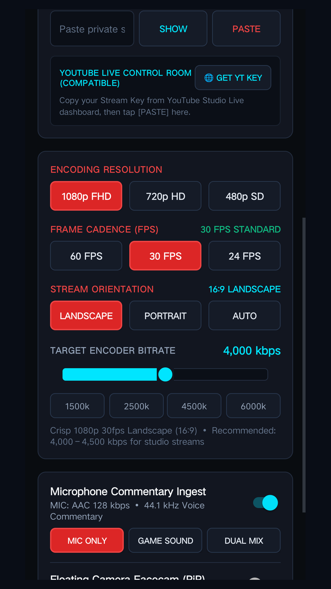
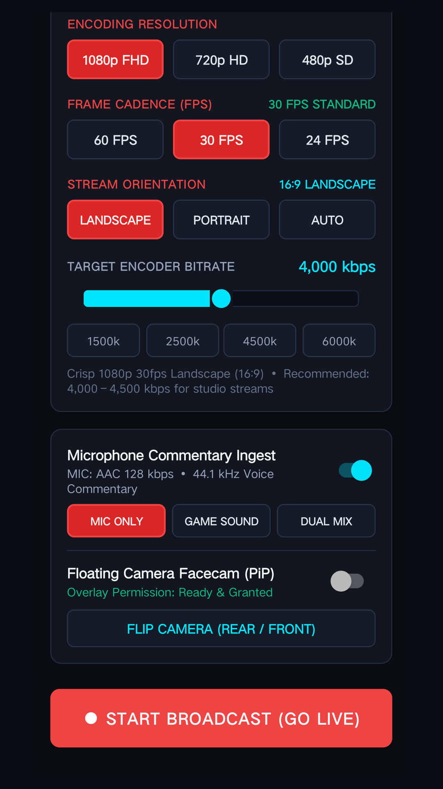

Foreground Service Permissions Demonstration for Google Play Review

The user taps GO LIVE in the studio deck and grants Android MediaProjection, Camera, and Microphone permissions.

StreamService runs an active Foreground Service notification while encoding screen capture (MediaProjection) and AAC microphone audio.

While the user switches to gameplay or external apps, background camera streaming, screen capture, and microphone audio continue uninterrupted with on-screen tally controls.